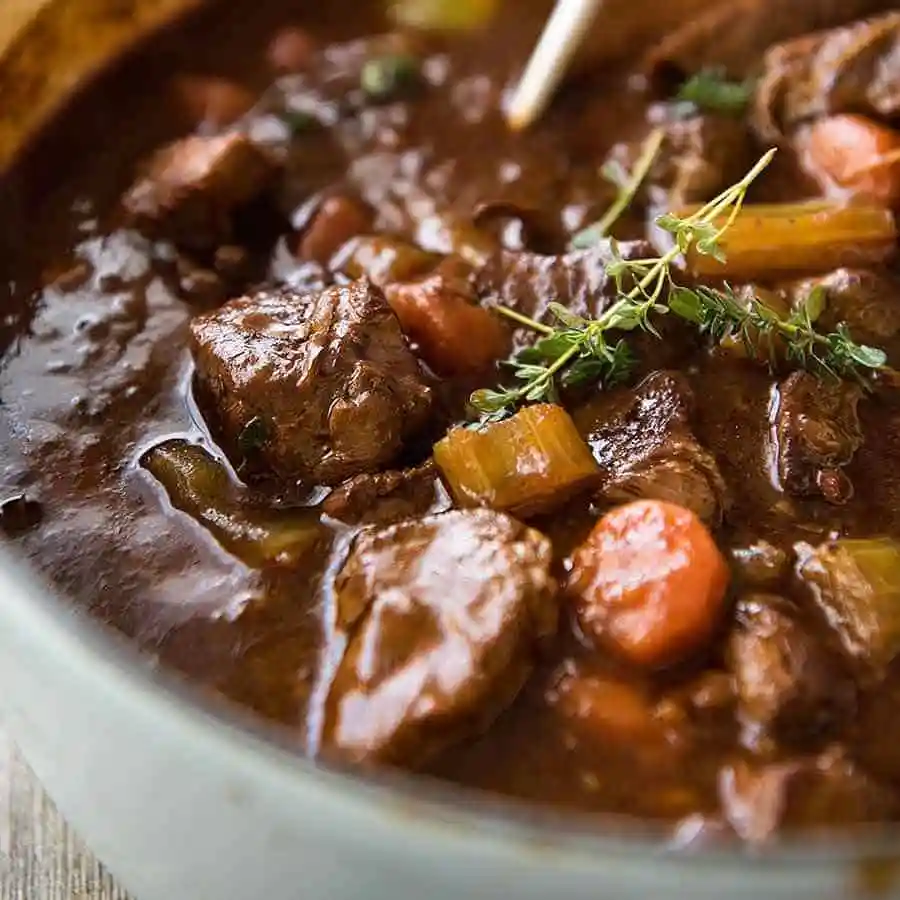

CULINARY CONCOCTIONS
Menu
Potato Pancakes

Potato pancakes are a traditional Irish breakfast dish. It called "bacstaí" in Irish and has a few variations, but the most common is a flat cake similar to latkes. The pancakes contain finely shredded potato, flour, vegetables, and spices.
Chechebsa (Kita Fir Fir)
Featuring hand-torn flatbread bathed in golden niter kibbeh, adorned with vibrant toppings, and enriched with a sprinkle of fragrant berbere spice – a tantalizing journey through the flavors of Ethiopia on your plate.
Manakish

Manakish (also pronouned as Manaeesh) is a Lebanese pizza or flatbread made with a soft dough and topped with various toppings, the most common of which is Za'atar and cheese. It can be made into small circular rounds or larger ones depending on preference.
Pineapple Bun

A pineapple bun is a kind of sweet bun predominantly popular in Hong Kong and also common in Chinatowns worldwide. Despite the name, it does not traditionally contain pineapple; rather, the name refers to the look of the characteristic topping.
Kitfo
Showcasing finely minced prime beef blended with aromatic spices, served alongside clarified butter, homemade cheese, and freshly baked injera – an exquisite symphony of flavors that invites you to experience the authentic taste of Ethiopian gastronomy in every delectable bite.
Parsnip Soup
Parsnips are a staple root vegetable in Ireland and often incorporated into soup. Parsnip soup is typically blended and spiced with cumin and coriander. Brown bread is a widespread homemade loaf, which was popular during the Irish famine.
Char Siu Bao

Char siu bao is a Cantonese baozi filled with barbecue-flavored cha siu pork. They are served as a type of dim sum during yum cha and are sometimes sold in Chinese bakeries.
Shawarma

Shawarma (Arabic: شاورما) is a Middle Eastern dish that originated in the Levant region of the Arab world during the Ottoman Empire, consisting of meat cut into thin slices, stacked in an inverted cone, and roasted on a slowly turning vertical rotisserie or spit.
Vegan Beyayinetu
Embark on a plant-powered feast, a lavish canvas of injera adorned with an exquisite array of colorful and flavorful stews, featuring lentils, chickpeas, vibrant vegetables, and aromatic spices – a harmonious celebration of diverse tastes and textures that invites you to relish the vibrant essence of Ethiopian vegan cuisine.
Kibbeh
A Middle Eastern dish of ground lamb with bulgar wheat and seasonings, eaten cooked or raw.
Beef & Guinness Stew

Irish stew, the national dish, varies regionally but typically contains meat and vegetables cooked slowly. A popular variant is Beef & Guinness, where a pint of Guinness is added to the gravy. The stew is served atop or alongside seasoned mashed potatoes.
Siu Mai

Siu mai is a Cantonese dumpling with a pork filling wrapped in an extra thin wonton and steamed. The wrapper is not completely folded so the filling can be seen from above. There is often an orange topping, sometimes crab roe, sometimes grated carrot.
Baklava
Lebanese Baklava (Baklawa) is the best of many Middle Eastern sweets. This Lebanese pastry is made with sheets of filo dough or pastry, layered with clarified butter or ghee, and filled with sugary walnuts and topped with a rose water syrup.
Mushebek
Indulge your sweet tooth with our delectable Sweet Mushebek, a heavenly treat of layered pastry filled with a luscious blend of spiced nuts, honey, and a touch of fragrant rose water – a sumptuous fusion of textures and flavors that promises a delightful finale to your Ethiopian culinary experience
Egg Tart

Egg tarts are a traditional Cantonese dessert made with a flaky pastry crust and a creamy egg custard filling. The flavor of the egg balances out the sweetness of the sugar, creating a balance between sweet and savory.
Apple Cake

Apple cake is a popular "farmhouse style" Irish dessert. It is usually made with tart apples and a layer of cake and crumble, plus warm spices like cinnamon and nutmeg.